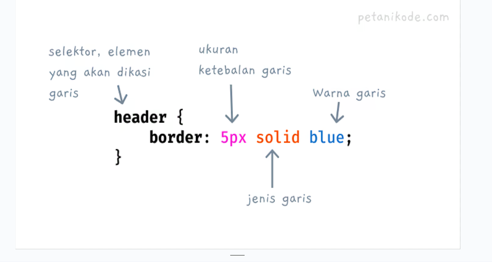
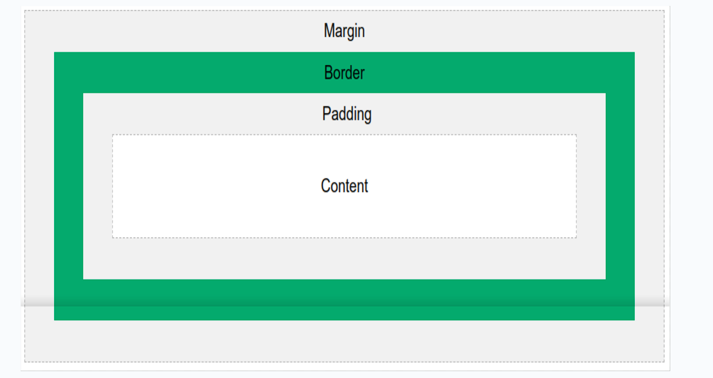

01 { [Pengenalan Dasar CSS] Pemahaman tentang CSS sangat penting, jika kita
ingin fokus pada front-end web development. Tanpa menggunakan CSS, kita tidak
mungkin akan bisa membuat web berdasarkan desain yang ditentukan desainer. } 

02
[Apa itu CSS?] CSS (Cascade Style Sheet) adalah sebuah bahasa untuk mengatur
tampilan web sehingga terlihat lebih menarik dan indah. Dengan CSS, kita dapat
mengatur layout (tata letak), warna, font, garis, background, animasi, dan
lain-lain. 

03 { [Sejarah dan Perkembangan CSS] } video.html History; { ‘Sebelum
adanya CSS, tidak ada bahasa yang dipakai untuk memberikan style pada dokumen
(web). Tampilan web terasa hambar dan kurang tertata. Ide awal tentang style
sheet di browser bukan sesuatu yang baru. Pada tahun 1990, Tim Berners-Lee
membuat web browser bernama NeXT browser/editor.’ Pada browser ini, kita bisa
membuat style sheet. Akan tetapi, sintaks style sheet-nya tidak ia publikasikan.
10 Oktober 1994; {

Håkon Wium Lie membuat draft proposal bahasa CSS dan mengirimnya ke mailist www-talk dan www-html. 1.

November 1994; {

‘Wium Lie mempresentasikan draft propsal bahasa CSS (Cascading HTML Style Sheets) di acara Web Conference di Chicago.

Orang pertama yang merespon proposal ini adalah Bert Bos. Ia saat itu sedang mengembangkan browser bernama Argo. Kemudian ia memutuskan untuk bergabung dengan Wium Lie untuk mengembangkan CSS’

April 1995; {

‘Draft bahasa CSS dipresentasikan lagi pada acara WWW Conference. Pada acara ini Wium Lie bertemu langsung dengan Bert Bos.’

Bert Bos membawakan presentasi tentang dukungan CSS pada Argo dan Wium Lie menampilkan demo Arena Browser yang sudah ia modifikasi agar mendukung penggunaan CSS..

Mei 1995; {

‘Implementasi bahasa CSS mulai dikerjakan. Pada bulan ini mail list (group) baru bernama www-style dibuat. Mai list menjadi tempat diskusi pengembangan CSS.’

History ‘CSS’ {

17 Desember 1996

< CSS versi pertama atau CSS 1 akhirnya dirilis. >

Mei 1998

< CSS veri keuda atau CSS 2 dirilis. Pada versi ini ditambahkan dukungan media output. >
} -->

04 { [Perkembangan Versi CSS]
<Sejak awal dirilis, CSS memiliki beberapa versi>
  }Features of ‘the Topic’ 
  { adalah versi pertama (17 Desember 1996) CSS 1 
   CSS 2
  adalah versi ke-2 (Mei 1998) CSS 
  2.1 dirilis pada 7 juni 2011 
  CSS 3 versi yang
  banyak digunakan saat ini. }
</Sejak> -->

<!-- cara penulisan

 01 
[Internal CSS] 
Internal CSS adalah kode CSS yang ditulis di dalam tag <style>. Intarnal CSS juga dikenal dengan sebutan Embeded CSS.
Tag <style> bisa ditulis di dalam tag <head>, bisa juga ditulis di dalam tag <body>. Namun kebanyakan orang menulisnya di dalam <head>  -->

<!-- 02 { [Eksternal CSS] < Eksternal CSS adalah kode CSS yang ditulis terpisah
dengan kode HTML. Eksternal CSS ditulis di dalam file khusus yang berekstensi
.css > } -->

<!-- 03 { [Inline CSS] < Inline CSS adalah kode CSS yang ditulis langsung pada
atribut style di elemen HTML. Kode CSS ditulis langsung tanpa menggunakan kurung
kurawal{ ... }. Kemudian properti tetap dipisah dengan titik koma > } -->

<!-- Menghubungkan dengan 2 Cara { Untuk menggunakan CSS ini, kita harus
menghubungkannya dengan HTML. Ada dua cara yang bisa kita lakukan: 
1.Menggunakan tag <link />
2. Menggunakan @import } -->

<!-- syntak css -->

<!-- 01 { [Pengertian Sintaks CSS] < CSS punya sintaks atau tata cara penulisan kode
yang harus diikuti. Jika kita salah tulis, bisa jadi CSS yang kita buat tidak
akan menghasilkan apa-apa di tampilan web. Karena itu, kita wajib memahami
sintaks dasar CSS agar tidak salah tulis. > } -->

<!-- 02 { [Struktur Dasar CSS?] < Struktur kode CSS terdiri dari tiga bagian:
Selektor Blok Deklarasi Properti dan nilanya > }  -->
<!-- #1 Selektor{ < Selektor adalah kata kunci untuk memilih elemen HTML yang akan
kita beri style > } ] 
#2 Blok Deklarasi{ < Blok deklarasi adalah tempat kita
menuliskan atribut atau properti CSS yang akan diberikan ke pada elemen yang
telah diseleksi. > } 
#3 Properti dan Nilainya{ < Properti adalah sekumpulan
aturan yang akan diberikan kepada elemen yang dipilih. > } -->

<!-- 03 { [Penulisan
Komentar di CSS] } -->
<!-- Komentar biasanya dipakai untuk memberikan informasi tambahan di kode CSS. Cara
menulis komentar di CSS dilakukan dengan tanda /* dan diakhiri dengan */. -->

<!-- Jenis-jenis selector -->

<!-- 01 { [Pengertian Selektor di CSS] < Selektor adalah katakunci dan simbol yang
digunakan pada CSS untuk menyeleksi atau memilih elemen HTML. Ada 6 macam
selektor di CSS: Selektor Tag, Selektor Class, Selektor ID, Selektor Atribut,
Selektor Universal, Selektor Pseudo> } -->

<!-- 02 { [Selektor Tag] < Selektor Tag disebut juga Type Selector. Selektor ini akan
memilih elemen berdasarkan nama tag. > } -->
<!-- 
03 { [Selektor Class] < Selektor class adalah selektor yang memilih elemen
berdasarkan nama class yang diberikan. Selektor class dibuat dengan tanda titik
di depannya. > } -->

<!-- 04 { [Selektor ID] < Selektor ID hampir sama dengan class. Bedanya, ID bersifat
unik. Hanya boleh digunakan oleh satu elemen saja. Selektor ID ditandai dengan
tanda pagar (#) di depannya. > } -->

<!-- 05 { [Selektor Atribut] < Selektor atribut adalah selektor yang memilik elemen
berdasarkan atribut. Selektor ini hampir sama seperti selektor Tag. > } -->

<!-- 06 { [Selektor Universal] < Selektor universal adalah selektor yang digunakan
untuk menyeleksi semua elemen pada jangkaua (scope) tertentu. > } -->

<!-- 07 { [Selektor Pseudo] < Pseudo selektor adalah selektor untuk memilih elemen
semu seperti state pada elemen, elemen before dan after, elemen ganjil, dan
sebagainya. Ada dua macam pseudo selektor > } -->

<!-- #1 Pseudo-class{ < Pseudo-class adalah selektor untuk memilih state pada elemen.
> }
Selain :hover ada beberapa selektor pseudo-class lainnya:

:link untuk memlih link yang belum dikunjungi;

:visited untuk memlih link yang sudah dikunjungi;

:active untuk memilih elemen yang sedang aktif, seperti saat diklik;

:focus untuk memlih elemen yang sedang dalam keadaan fokus, misal teks lagi diinput.

:checked untuk memilih elemen yang dicentang pada checkbox. -->

<!-- #2 Pseudo-element{ < Pseudo-element adalah selektor untuk memilih elemen semu.
Elemen semu yang saya maksud di sini adalah elemen yang seolah-olah kita
tambahkan di HTML. > } -->
<!-- ::before untuk memilh elemen semu sebelum elemen;

::after untuk memilh elemen semu setelah elemen;

::marker untuk memilh marker pada list;

::placeholder untuk memilih teks placeholder pada elemen input teks; -->

<!-- color -->

<!-- Mengenal Properti Color CSS color digunakan untuk memberikan color atau warna
pada elemen HTML. Dengan color Anda bisa memberikan nilai warna pada properti
background-color, border-color, color dan yang lainnya. Pada color sendiri Anda
bisa memberikan nilai atau menentukan warna mana yang akan digunakan dengan
macam-macam type warna. Seperti: RGB, HEX, HSL dan yang lainnya. Sintaks Dasar:
selector { color: nilai_warna; } -->

<!-- Nilai yang Valid untuk Warna

Ada beberapa cara untuk menentukan warna di CSS, yaitu:

Nama Warna (Color Names) 
CSS memiliki daftar nama-nama warna yang dapat langsung digunakan seperti red, blue, green, yellow, dan banyak lagi.

Contoh :
p { color: red; }


Kode Warna Hexadecimal (Hex Code) 
Kode hexadecimal adalah cara populer untuk menentukan warna dengan format #RRGGBB, di mana RR, GG, dan BB mewakili intensitas warna merah, hijau, dan biru.

Contoh:
	h1 { color: #ff5733; } -->

<!-- Nilai yang Valid untuk Warna

RGB (Red, Green, Blue) 
RGB menggunakan fungsi rgb() untuk menentukan warna dengan nilai masing-masing warnamerah, hijau, dan biru dalam skala 0 hingga 255.
Contoh:
div { color: rgb(255, 99, 71); /* Warna Tomat */ }

RGBA (Red, Green, Blue, Alpha) 
Serupa dengan RGB, namun memiliki nilai tambahan alpha yang mengontrol transparansi warna. Nilai alpha berkisar antara 0 (transparan) hingga 1 (opaq).
Contoh:
div { color: rgba(255, 99, 71, 0.5); /* Warna Tomat dengan Transparansi 50% */ } -->

<!-- Nilai yang Valid untuk Warna

HSL (Hue, Saturation, Lightness) HSL menggunakan warna berdasarkan hue (nada warna), saturation (kejenuhan), dan lightness (kecerahan).
Contoh :
h2 { color: hsl(120, 100%, 50%); /* Hijau cerah */ }
HSLA (Hue, Saturation, Lightness, Alpha) Sama dengan HSL, tetapi dengan nilai tambahan alpha untuk transparansi.
	Contoh :
	h2 { color: hsla(120, 100%, 50%, 0.7); /* Hijau cerah dengan transparansi 70% */ }
 -->

<!-- Tips: Menggunakan Warna

Kontras yang Baik
Pastikan teks dan latar belakang memiliki kontras yang cukup agar mudah dibaca. Misalnya, teks gelap di atas latar belakang terang atau sebaliknya.
Contoh:
body { background-color: black; color: white; }


Gunakan Warna yang Konsisten
Pilih palet warna yang harmonis dan konsisten di seluruh situs agar memberikan tampilan yang rapi dan enak dipandang.
Contoh: Gunakan warna-warna dari keluarga yang sama (misalnya, variasi warna biru atau hijau) untuk memberikan kesan profesional dan selaras. -->

<!-- Tips: Menggunakan Warna

Pertimbangkan Makna Warna
Warna memiliki arti dan emosi tertentu. Misalnya:
Merah: Energi, urgensi, atau bahaya.
Hijau: Kesegaran, alam, atau kesehatan.
Biru: Ketenangan, kepercayaan, atau kestabilan.
Pilih warna yang mendukung pesan dari halaman web.
Uji Keterbacaan pada Berbagai Layar
Periksa bagaimana warna terlihat di layar yang berbeda (monitor, tablet, smartphone). Terkadang, warna yang terlihat baik di satu layar mungkin kurang jelas di layar lain. -->

<!-- bg -->

<!-- 01 { [Background Warna di CSS] < Untuk memberikan background warna, kita bisa
memberikan nilai warna pada properti background seperti ranam warna, kode heksa
warna, fungsi rgb(), rgba(), hsl(), dan sebagainya. > } -->

<!-- 02 { [Background Image di CSS] < Jika ingin menggunakan warna latar gambar, maka
kita bisa menggunakan properti background-image atau background saja. Format
gambar yang didukung bisa: jpg, png, gif, webp, avif, svg, dll. Intinya, selama
format gambar tersebut bisa dibuka di web browser, maka bisa dipakai sebagai
background. > } -->

<!-- [Formatting Text in CSS]  -->

 <!-- 01 {

[Text Align di CSS] 

< Jika kamu pernah menggunakan aplikasi Office, pasti pernah mengenal perataan teks. Ada rata kiri, rata kanan, rata tengah, rata kiri dan kanan > 

Kita juga bisa meratakan teks dengan properti CSS text-align. Properti ini punya nilai yang valid:

left untuk rata kiri;
right untuk rata kanan;
center untuk rata tengah;
justify untuk rata kiri dan kanan;
start rata pada awal (mengikuti direction);
end rata pada akhir (mengikuti direction);

[Text Direction di CSS] 

< CSS punya properti direction untuk menentukan arah baca teks. Misalnya dari kiri ke kanan (ltr) atau dari kanan ke kiri (rtl).

Secara umum teks biasanya dibaca dari kiri ke kanan. Tapi ada juga yang dibaca dari kanan ke kiri, contohnya teks bahasa arab.

Jika kita membuat website dengan bahasa arab, lalu membiarkan direction menggunakan left to right (ltr), maka hasilnya akan seperti ini. >

[Text Decoration di CSS] 

< Properti text-decoration adalah properti untuk memberikan dekorasi garis pada teks. Contohnya seperti garis bawah, garis atas, dan garis di tengah (teks tercoret). >
Properti ini punya nilai berupa:

none artinya tidak menggunakan dekorasi apapun;
underline artinya kita akan memberikan dekorasi garis bawah;

overline dekorasi dengan garis di atas teks;
line-through dekorasi garis di tengah atau teks tercoret.

04 {

[Text Transform di CSS] 

< Properti text-transform berfungsi untuk mengubah bentuk teks. Misalnya dari huruf kecil menjadi huruf besar. >
Berikut ini nilai-nilai yang valid untuk text-transform

lowercase untuk mengubah semua teks menjadi huruf kecil;
uppercase untuk mengubah semua teks menjadi huruf kapital (besar);

capitalize untuk mengubah teks pada huruf pertama kata menjadi kapital.
none untuk tidak melakukan transform.

[Text Spacing di CSS] 

< Text Spacing adalah ruang kosong pada teks>
CSS menyediakan beberapa properti untuk mengatur spacing pada teks

text-indent untuk mengatur indentasi;
letter-spacing untuk mengatur jarak spasi antar huruf;

line-height untuk mengatur jarak antar baris;
word-spacing untuk mengatur jarak antar kata;
white-space untuk mengatur white space pada teks.

[Text Overflow di CSS] 

< Properti text-overflow berfungsi untuk mengatur panjang teks yang melebihi ukuran dari elemen.

Misalnya, kita punya elemen dengan ukuran 100px, lalu kita isi dengan teks yang panjangnya lebih dari 100px. Maka ini akan menyebabkan teks overflow. >
Secara default, teks akan ditulis ke baris baru jika melebihi batas elemen. Namun, pada kondisi tertentu, seperti saat kita menggunakan whitespace: nowrap dan overflow:hidden teks tidak akan ditulis ke baris baru.

Oleh sebab itu, pada kasus ini kita membutuhkan text-overflow untuk mengatur teks tersebut.

[Text Shadow di CSS] 

< Properti text-shadow merupakan properti untuk memberikan bayangan pada teks. Properti ini mulai ada pada CSS3 >
Format nilai untuk text-shadow adalah sebagai berikut:
text-shadow: x y blur warna;

x adalah jarak bayangan bedasarkan sumbu y (horizontal);

Y adalah jarak bayangan berdasarkan sumbu x (vertikal);

blur adalah ukuran kepudaran dari bayangan;

Warna warna bayangan, bisa diberikan dalam nama warna, fungsi rgb(), hsl(), dsb
-->

<!-- font -->

<!-- 01 { [Mengatur Ukuran Font di CSS] < Untuk mengatur ukuran font, kita bisa
menggunakan properti font-size. Properti ini dapat kita beri nilai dengan satuan
px (piksel), % (persentase), em, rem, dan lain-lain > } 
Format nilai untuk text-shadow adalah sebagai berikut:
text-shadow: x y blur warna;

x adalah jarak bayangan bedasarkan sumbu y (horizontal);

Y adalah jarak bayangan berdasarkan sumbu x (vertikal);

blur adalah ukuran kepudaran dari bayangan;

Warna warna bayangan, bisa diberikan dalam nama warna, fungsi rgb(), hsl(), dsb

Pada contoh ini, kita mengatur ukuran font untuk elemen <h1> adalah 24px. Kamu bisa lihat sendiri hasilnya.
Lalu ukuran font pada paragraf pertama adalah large yang artinya lebih besar dari ukuran normal (16px).
Kemudian pada paragraf kedua, kita tidak mengatur ukuran font-nya. Sehingga akan menggunakan ukuran normal, yakni 16px.
Kemudian paragraf terakhir kita beri ukuran font-nya dengan small.
-->
<!-- 
02 { [Mengatur Ketebalan Font di CSS] < Untuk mengatur ketebalan font, kita bisa
menggunakan properti font-weight. Properti ini dapat kita berikan nilai berupa
angka ukuran ketebalan atau nilai konstan yang sudah ada. > }

Contoh nilai-nilai yang valid:

lighter untuk ketebalan yang tipis;
normal untuk ketebalan normal;
bold untuk membuat font lebih tebal;
bolder untuk membuat font lebih tebal lagi;
100 sampai 900 rentang angka ketebalan.
-->

<!-- 03 { [Mengatur Font Style di CSS] < Properti font-style digunakan untuk mengatur
agar teks miring. Nilai yang valid untuk properti ini adalah: normal – teks
normal; 
italic – teks miring (italic); 
oblique – teks miring seperti italic; > } -->

<!-- 04 { [Mengatur Jenis Font di CSS] < Untuk mengatur jenis font, kita bisa gunakan
properti font-family. Properti ini bisa kita isi dengan nama font dan juga nama
family dari font. > } 

Secara umum ada lima jenis family font:

Sans Serif Font tanpa tanduk;
Serif Font yang ujungnya punya tanduk;
Monospace Font yang ujungnya punya tanduk;
Cursive Font seperti tulisan tangan;
Fantasy Font dengan bentuk yang menarik.
-->

<!-- 05 { [Menggunakan Font dari Google] < Untuk menggunakan font dari Google Font,
kita harus mengimpor font-nya terlebih dahulu dengan tag <link /> di HTML atau
kata kunci @import di CSS. > } -->

<!-- garis -->

<!-- 01 { [Cara Membuat Garis dengan CSS] < Garis dapat kita buat dengan properti
border. Properti yang digunakan untuk membuat garis pada CSS adalah border.
Properti ini memiliki 3 nilai yang harus diberikan: Ukuran garis Jenis Garis
Warna Garis }  -->

<!-- 02 { [Memberikan Garis Pada Sisi Tertentu] < Kita bisa memberikan garis pada
sisi tertentu dengan atribut berikut. border-top untuk garis di sisi atas
elemen; border-bottom untuk garis di sisi bawah elemen; border-left untuk garis
di sisi kiri; border-right untuk garis di sisi kanan. } -->

<!-- 03 { [Jenis-jenis Garis] < Jenis garis di CSS bisa kita ganti. Kita bisa pakai
properti border-style untuk mengganti jenis garis. Berikut ini jenis garis yang
biasanya digunakan: - solid garis biasa - dotted garis dengan titik putus-putus
- dashed garis putus-putus dengan dash - double garis double - none tanpa garis
- hidden garis tersembunyi> } -->

<!-- 04 { [Membuat Pojok Garis Tumpul (Rounded Corner)] < Properti border-radius
berfungsi untuk membuat pojok elemen menjadi tumpul atau nggak lancip> } -->

<!-- 05 { < Selain menggunakan border style yang sudah ada, kita bisa menggunakan
gambar sebagai border. Caranya menggunakan properti border-image Properti
border-image merupakan properti gabungan dari beberapa properti untuk membuat
garis dengan gambar.> } 

Secara umum ada lima jenis family font:

Sans Serif Font tanpa tanduk;
Serif Font yang ujungnya punya tanduk;
Monospace Font yang ujungnya punya tanduk;
Cursive Font seperti tulisan tangan;
Fantasy Font dengan bentuk yang menarik.
-->

<!-- ukuran element -->

<!-- 01 { [Menentukan Ukuran dengan Piksel] < Satuan ukuran dengan piksel atau px
adalah satuan ukuran yang paling dasar di CSS. Ini karena awalnya web cuma
ditampilkan di layar monitor saja. Monitor menggunakan piksel untuk ukuran
resolusinya.> } -->

<!-- 02 { [Menentukan Ukuran dengan Persen (%)] < Satuan ukuran persen biasanya akan
mengikuti ukuran induknya. Maksudnya? Misalnya kita punya elemen
<header>
  yang berada di dalam
  <body>
    . Elemen
    <body>
      adalah induk dari elemen
      <header>
        , maka saat kita pakai satuan persen pada
        <header>> }</header>
      </header>
    </body>
  </body>
</header> -->

<!-- 03 { [Menentukan Ukuran dengan Satuan EM dan REM] < Satuan em dan rem lahir dari
panjang karakter em dash (–). Karakter em dash seperti minus, tapi dia lebih
panjang. Panjangnya mengikuti lebar huruf m makannya dinamakan em dash. Selain
em dash ada juga en dash > } -->

<!-- 04 { [Menentukan Ukuran yang Mengikuti Viewport] < Viewport adalah area yang
dipakai untuk menampilkan Web. Viewport biasanya akan berubah-ubah kalau kita
resize ukuran browser. > } -->

<!-- Explanation { Ada beberapa satuan yang dipakai untuk menentukan ukuran elemen
agar mengikuti ukuran viewport vh Viewport Height - tinggi dari viewport vw
Viewport Width – lebar dari viewport vi Viewport inline Vmin dan vmax minimum
dan maksimum ukuran dimensi viewport xx-large untuk ekstra besar; x-small untuk
teks yang lebih kecil dari small; Modifier viewport l (large), s (small), dan d
(dynamic), Contoh: lvh, svw } -->

<!-- box model  -->
  
01 { [Pengertian Model Kotak di CSS] < Dalam CSS, istilah "model kotak"
digunakan ketika berbicara tentang desain dan tata letak > }
g
<!-- Content Isi kotak, tempat teks dan gambar muncul

Padding Menghapus area di sekitar konten. Bantalannya transparan

Border Perbatasan yang mengelilingi padding dan konten

Margin Membersihkan area di luar perbatasan. Marginnya transparan -->

<!-- 02 { < Untuk mengatur lebar dan tinggi suatu elemen dengan benar di semua
browser, Anda perlu mengetahui cara kerja model kotak Penting: Saat Anda
menyetel properti lebar dan tinggi suatu elemen dengan CSS, Anda cukup menyetel
lebar dan tinggi area konten . Untuk menghitung ukuran penuh suatu elemen, Anda
juga harus menambahkan padding, batas, dan margin. > } -->

<!-- 03 { < Untuk mengatur lebar dan tinggi suatu elemen dengan benar di semua
browser, Anda perlu mengetahui cara kerja model kotak Penting: Saat Anda
menyetel properti lebar dan tinggi suatu elemen dengan CSS, Anda cukup menyetel
lebar dan tinggi area konten . Untuk menghitung ukuran penuh suatu elemen, Anda
juga harus menambahkan padding, batas, dan margin. > } -->
<!-- Lebar total elemen harus dihitung seperti ini: Total elemen lebar = width +
padding kiri + padding kanan + border kiri + border kanan + margin kiri + margin
kanan Tinggi total elemen harus dihitung seperti ini: Tinggi total elemen =
height + padding atas + padding bawah + border atas + border bawah + margin atas
+ margin bawah -->

<!-- 04 { [Memperbaiki box model] < Dengan properti box-sizing Anda bisa memperbaiki
suatu elemen box/kotak agar sesuai dengan properti width dan height > }
